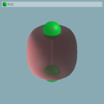
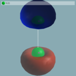

This lesson has been created for current stable version. Earlier versions are fully capable of running this tutorial but input files may have to be changed according to possible earlier formats.
Basics of BigDFT: visualising wavefunctions
This tutorial is based on the first one. You should have done it to generate the wavefunctions of the N2 molecule.
Visualise wavefunctions
The wavefunctions are output by choosing a non zero value for parameter output_wf in the .dft file. Several formats are available, but in each, only the non-null coefficient of the Daubechies wavelet representation are saved. This represents a compressed way of storing the wavefunctions (and roughly correspond to a dump of what is stored in memory during the calculation). In case you want to visualize the wavefunctions, you should translate these data in a real space grid. To post-process the wavefunctions, one need to get their value on a real space grid.
This is done by using bigdft-tool with the -a exportwf action:
user@garulfo:~/N2/$ ./bigdft-tool -a export-wf data-LDA/wavefunction-k001-NR.b0001
It creates four files in the current directory.
wavefunction-[...].xxxx_avg_{x,y,z}: which is the projection of the wavefunction value along a given axis.wavefunction-[...].xxxx.cube: which is the values of the wavefunction (either real or imaginary part) on a regular real space mesh.
One can then visualise the wavefunction expansions with their favorite program. Let's take V_Sim as an example. Open V_Sim with the following command line (using the cube file as a file for atomic coordinates and the same cube file for a scalar field):
user@garulfo:~/N2/$ v_sim -f wavefunction-k001-NR.b0001.cube wavefunction-k001-NR.b0001.cube
Go to the "iso-surface" tab and click on the "add" button on the right. It will create an iso-surface representing the half value position of the first orbital. One can use the "open" button on top-right of the tab to choose another cube file. Let's load all our five wavefunctions (after exporting them to cube files as for the first one). Then, select each of them and click on the add button to plot iso-surfaces.
One can remove plotted iso-surfaces by clicking on the "remove" button on the right or simply hide them by unchecking the box on the line of the iso-surface. One may use this V_Sim resource file to obtain the same rendering as for the screenshots. The orbitals should look like these:
 


As on the eigenvalues printed at the end of the calculation, one can see that the orbitals labelled 3 and 4 (the two π orbitals) are clearly degenerated:
e( 1)= -1.03032489370326E+00 2.0000 e( 2)= -4.95465225967267E-01 2.0000 e( 3)= -4.30176175111339E-01 2.0000 e( 4)= -4.30175870652628E-01 2.0000 e( 5)= -3.80429461838816E-01 2.0000
Exercise: Plot also the orbitals obtained in the Hartree-Fock calculation. Using the average on the z axis, compare the expansion of the σ orbitals.
Spin polarized calculations on the isolated Nitrogen atom
Spherical Isolated Atom calculation: adding occupation numbers
A rather common functionality which is desirable is to control at hand the occupation numbers of the Kohn-Sham orbitals.
In BigDFT, this can be done with the [input].occ file, where [input] is the name of the calculation (which is indeed input if the name is not provided). Let us try to see how this can be used.
First of all, let us perform a calculation of the isolated Nitrogen atom. To do this, modify posinp such that only one atom is considered. Clearly, its actual position does not matter. Run a BigDFT calculation, with the same input file as the LDA case of before. This will run the N atom system in a spin-averaged case. However, you should notice several messages in the screen output:
[...] WARNING: odd number of electrons, no closed shell system [...] --------------------------------------------------- End of Wavefunction Optimisation final ekin, epot, eproj 6.75020929031E+00 -9.80422570119E+00 9.52730931346E-01 final ehart, eexcu, vexcu 8.17020231438E+00 -2.18843884745E+00 -2.86507737449E+00 FINAL iter,total energy,gnrm 8 -9.59484926687149198E+00 5.15E-05 --------------------------------------- Kohn-Sham Eigenvalues and Occupation Numbers e( 1)= -6.76300135330237E-01 2.0000 e( 2)= -2.66781082160980E-01 2.0000 e( 3)= -2.40952063353801E-01 1.0000 Difference:evsum,energybs -2.1271144983362E+00 -2.1012854795290E+00 [...]
Spin-averaged atom: spherical versus non-spherical run
Since the number of electrons of the Nitrogen atom is odd, the last orbital (the third) is only half occupied. In addition, the configuration is not spherical. Run another run by inserting the follwing information in the [input].occ
file:
4 1 2. 2 1. 3 1. 4 1.
The first line is the number of orbital you put in the system. Then the association orbital-occupation number are written in the other lines. You migh also put only lines which refer to orbitals which have non-default occupation number (2 in this case). See if the energy lowers: it should. Moreover, the warnings of the previous output are now completed by additional information:
[...] WARNING: odd number of electrons, no closed shell system The occupation numbers are read from the file "input.occ" (4 lines read) Total Number of Orbitals 4 occup(1)= 2.0000 occup(2:4)= 1.0000 [...] --------------------------------------------------- End of Wavefunction Optimisation final ekin, epot, eproj 6.77542530012E+00 -9.86912485779E+00 9.53383895463E-01 final ehart, eexcu, vexcu 8.14497978312E+00 -2.15988903127E+00 -2.82730378186E+00 FINAL iter,total energy,gnrm 8 -9.61788069474253327E+00 3.76E-05 --------------------------------------- Kohn-Sham Eigenvalues and Occupation Numbers e( 1)= -6.74794648720006E-01 2.0000 e( 2)= -2.63575870275992E-01 1.0000 e( 3)= -2.63575870275992E-01 1.0000 e( 4)= -2.63574648371196E-01 1.0000 Difference:evsum,energybs -2.1403156863632E+00 -2.1403156622103E+00 [...]
Perform a spin-polarized calculation: adding a spin
Now you can add the (collinear) spin degree of freedom to the system. Since it is a single atom, Hund's rule implies also a given polarization. According to this, this should generate a up-down collinear polarization of 3 electrons. To control that, create an input file in which nspin and mpol
Decide the Input Guess polarization
The code will not work immediately, since it will ask for a Input Guess polarization of the system:Total Number of Electrons 5 Spin-polarized calculation ERROR: Total input polarisation (found 0) must be equal to norbu-norbd. With norb=5 and mpol=3 norbu-norbd=3In BigDFT, this input polarization might be added by putting the corresponding value for any atom in the
posinp.xyz file:
1 angstroem free N 0. 0. 0. 3Then the calculation can run. You can see that the energy is remarkably lower than in the best possible spin-averaged run:
--------------------------------------------------- End of Wavefunction Optimisation final ekin, epot, eproj 7.03464034486E+00 -1.01505536418E+01 9.16339342495E-01 final ehart, eexcu, vexcu 8.26953088669E+00 -2.31961067758E+00 -3.04713509766E+00 FINAL iter,total energy,gnrm 9 -9.74158042107937305E+00 7.88E-05 --------------------------------------- Kohn-Sham Eigenvalues and Occupation Numbers Total magnetisation: 3.000000 e( 1,u)= -7.21890615568107E-01 1.0000 1.0000 e( 1,d)= -5.50477513768522E-01 e( 2,u)= -3.09068827964518E-01 1.0000 e( 3,u)= -3.09068827964516E-01 1.0000 e( 4,u)= -3.09068169210905E-01 1.0000
Exercise: Charge the Nitrogen atom (say, remove one electron) and compare the energies of the system in symmetric spin-averaged configuration with respect to the spin-polarized case.
Hint: The [input].occ file might also accept fractional number written as actual fractions, e.g. 2/3 instead as 0.666666